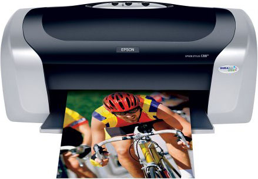
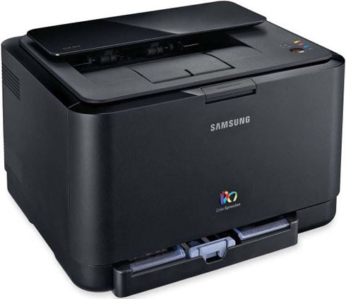
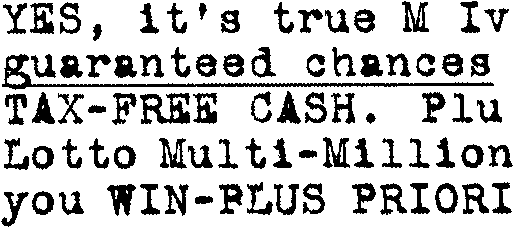
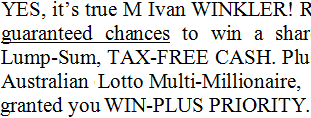

Tweet
Tweet
In a way, you could call scanning and recognizing “reverse printing”. When you print a document, you convert a computer file into black or colored dots on a piece of paper. A text — say, the Word file “Sales Memo.docx” — becomes a bitmap printed on sheets of paper.
 
Character recognition is the inverse process — you go from paper to computer files! (That’s why OCR has often been called the “missing link” of the computer world.) Here, the computer does not send the characters to the paper, but you get what’s on paper into the computer. Thanks to the text recognition, a bitmap becomes text — letters, digits, punctuation marks etc.
Bitmaps, also called “raster images” or simply “images”, are a grid or matrix of pixels. Numerous (often millions) tiny dots compose a picture. The specific location and color value of each dot is recorded in the image file; this computer file does not contain editable characters or formatting codes. For instance, when the character “W” occurs in an image, this distinctive shape can be represented by hundreds of black dots.

Texts on the other hand can be saved, printed, modified and reused at your convenience. They are a collection of alphabetic, numeric and symbolic characters and punctuation elements. Formatting codes are added for fonts, typestyles, point sizes, tabs, columns and footers etc.; these indicate how the symbols are organized and presented.
